Git diff in the Preview pane
Modified files open as a side-by-side diff against HEAD or any branch or tag, with word highlights and F7 / Shift+F7 to jump between changes.
Status letters and tinted names show what changed in the listing and the tree.
FileManagerUltra is a cross-platform (Linux, macOS, Windows) multi-pane file manager written in Rust, with a native UI. No Electron, no webview.
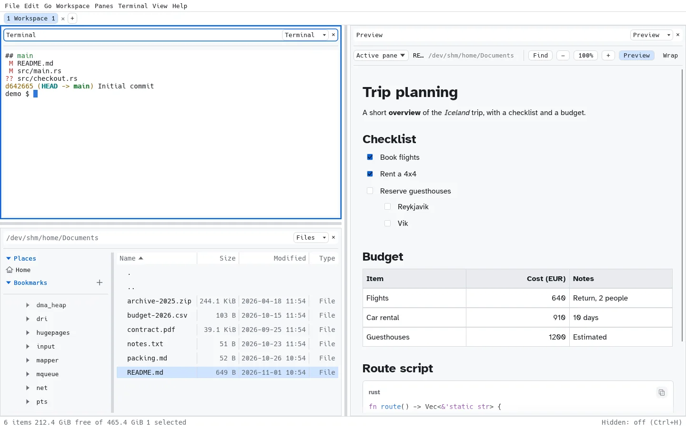
Recorded from the real app: separate workspaces for code, logs and media, saved and reopened on demand, plus a Git diff, a terminal agent, Markdown, images and logs.
Commander-style speed with a modern, native interface.
Split right or down as often as you like. Each pane has its own file tree and file listing.
Local drives, mounted shares, in-app SMB and SSH/SFTP all behind one virtual filesystem, so every pane feature works across them.
Drop onto a tree node or the listing. Hold Ctrl to copy, Shift to move.
File operations run as jobs with progress, conflict handling and cancel, so the UI never blocks.
Deleted items go to the trash and can be restored with undo. Directory listings update live.
Keep different layouts for different workflows in tabs, save them, and open them again later. Up to 10 workspaces persist.
F5–F8 for copy, move, new folder and delete; Tab swaps panes. Everything is a command.
Application mouse support (mc, btop), resize reflow, multi-screen selection and 5,000–1,000,000 rows of scrollback.
Markdown with tables, tasks and syntax-highlighted code; images with thumbnails; logs with filters and live tail.
Status in listings and tree, plus a diff view against HEAD or any branch or tag. Read-only, pure-Rust gix.
Switch themes with Ctrl+Shift+T. Local file times use your operating system's timezone.
Screenshots come straight from the app. Most match the page theme, and a few show the other one, so you see both. The Auto / Light / Dark switch at the top changes the page and its screenshots; click any screenshot to enlarge it.
Modified files open as a side-by-side diff against HEAD or any branch or tag, with word highlights and F7 / Shift+F7 to jump between changes.
Status letters and tinted names show what changed in the listing and the tree.
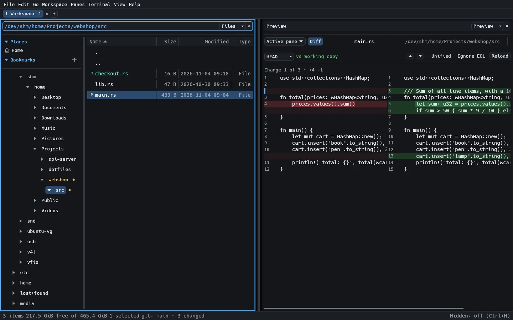
Nested lists, task lists, aligned tables and code blocks with per-block copy buttons. Zoom a preview from 50% to 400% and search with Ctrl+F.
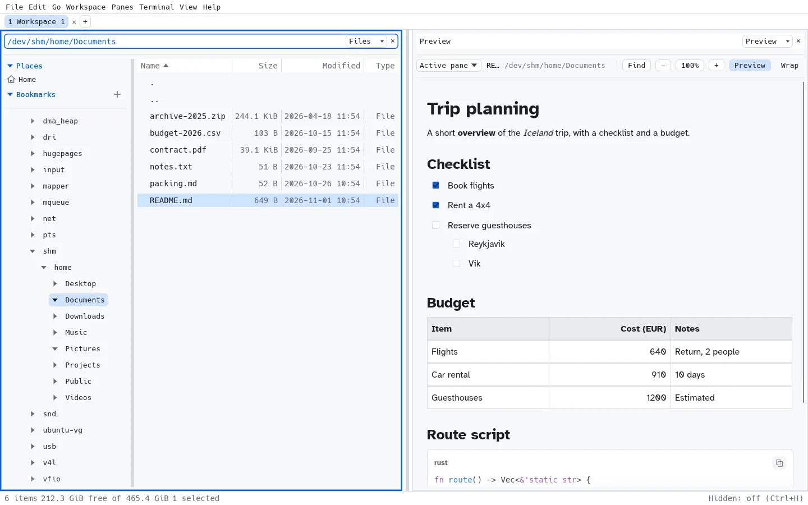
Preview an image next to the listing, or switch the preview to a thumbnail grid of the whole folder.
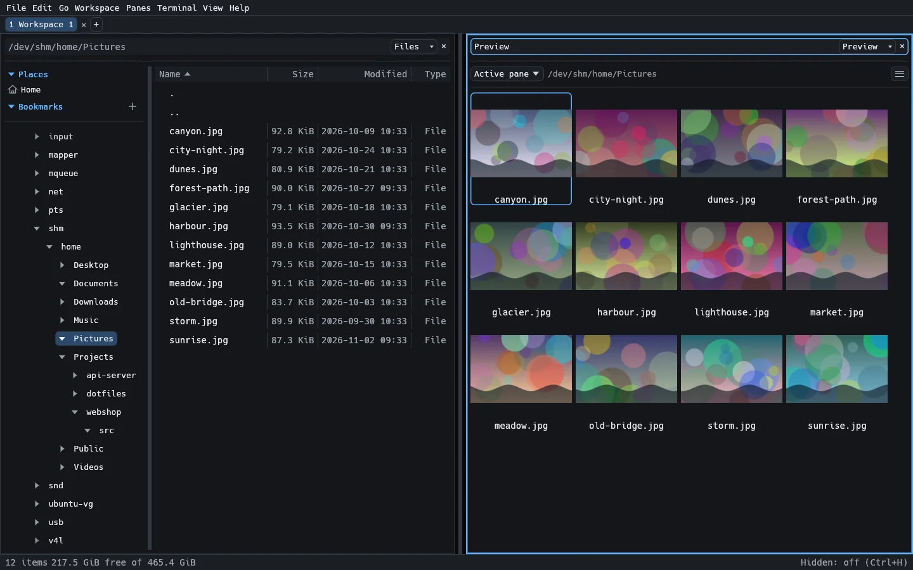
Severity filters, search and UTC time ranges from five minutes to seven days, or custom dates and times.
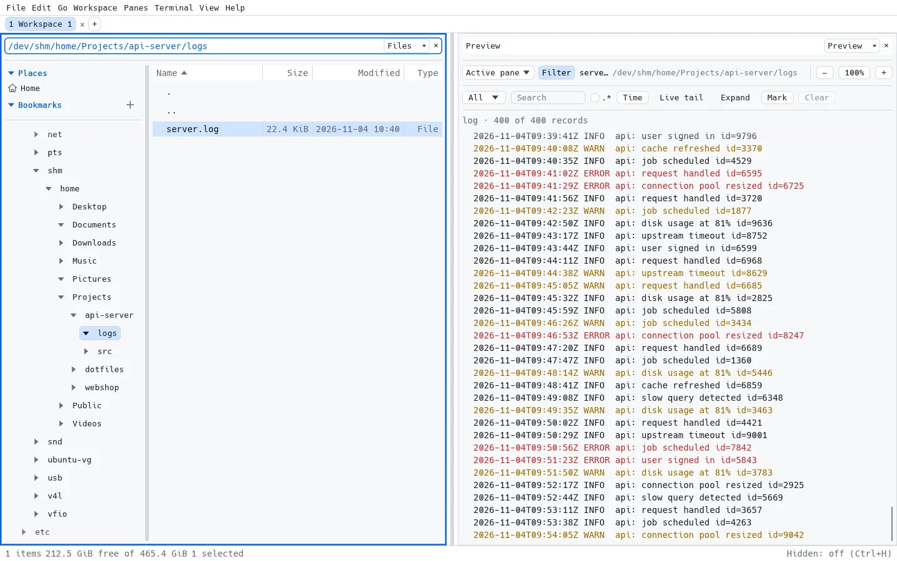
Put a terminal beside your files. Hold Shift for local selection and scrolling when an application captures the mouse.
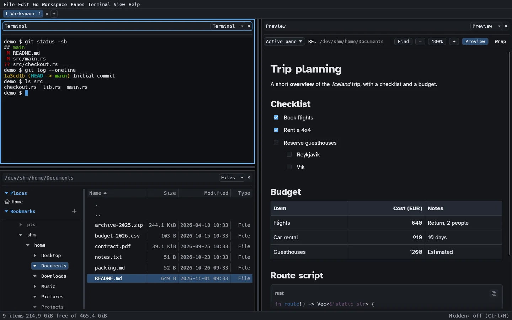
Light or dark, with an accent colour of your choice: pick one of the presets in Preferences ▸ Appearance, or enter a custom #rrggbb value. Default restores the theme colour.
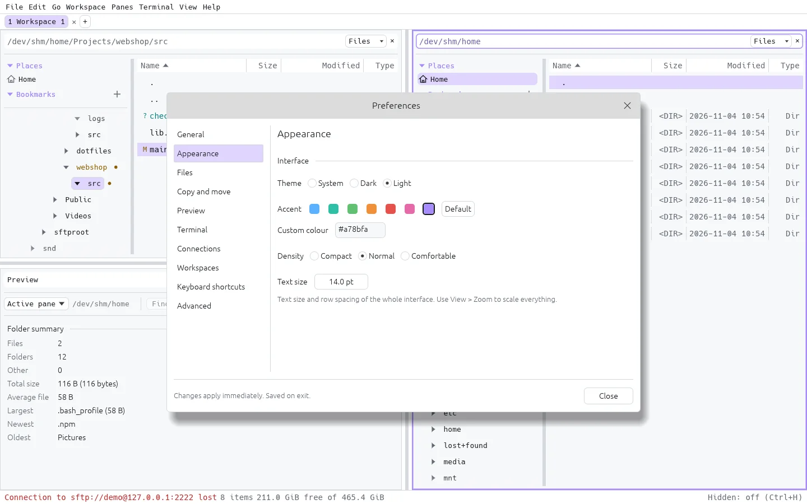
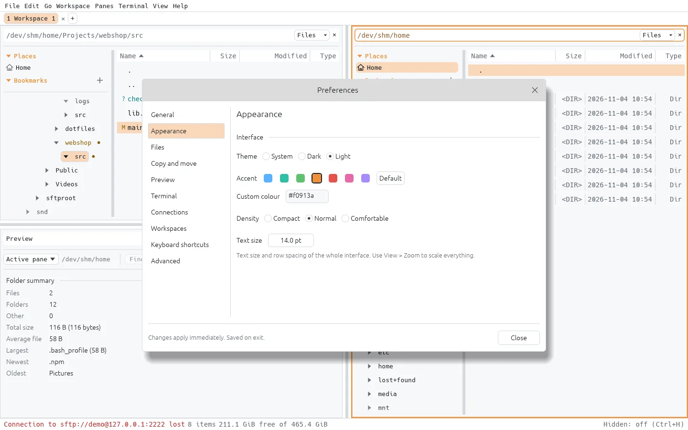
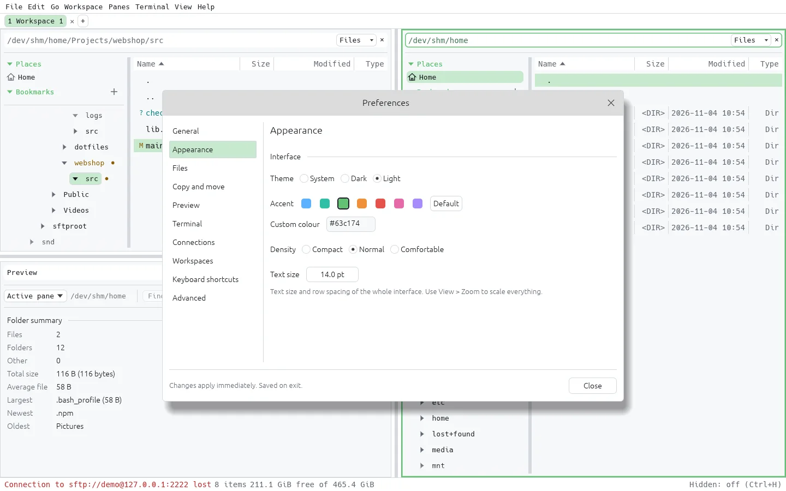
A terminal is just another pane. Run a terminal coding agent such as opencode in one pane, keep your project in a Files pane, and review what changed in a Preview pane.
The terminal pane runs any command-line tool, including full-screen TUIs, with application mouse support and up to 1,000,000 rows of scrollback.
Git status markers in the listing show which files were touched, and the Preview pane opens a side-by-side diff against HEAD, so you can read every change before you commit it.
Split as many panes as you need: a second agent, a test runner, or a log tail.
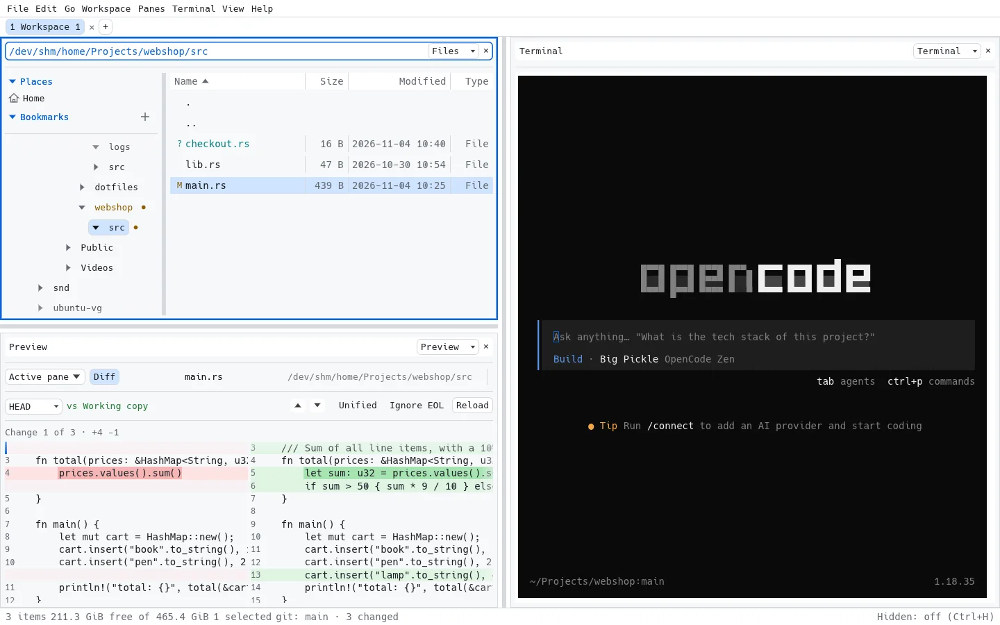
Point any pane at sftp://user@host/… or smb://server/share. Remote folders behave like local ones: split, drag & drop, copy and move as background jobs.
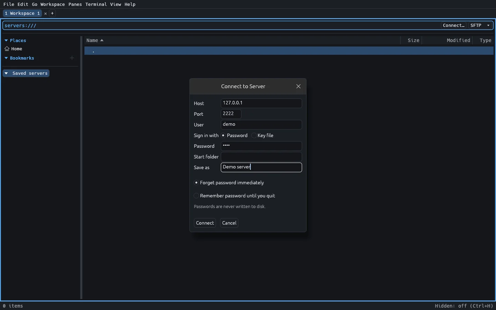
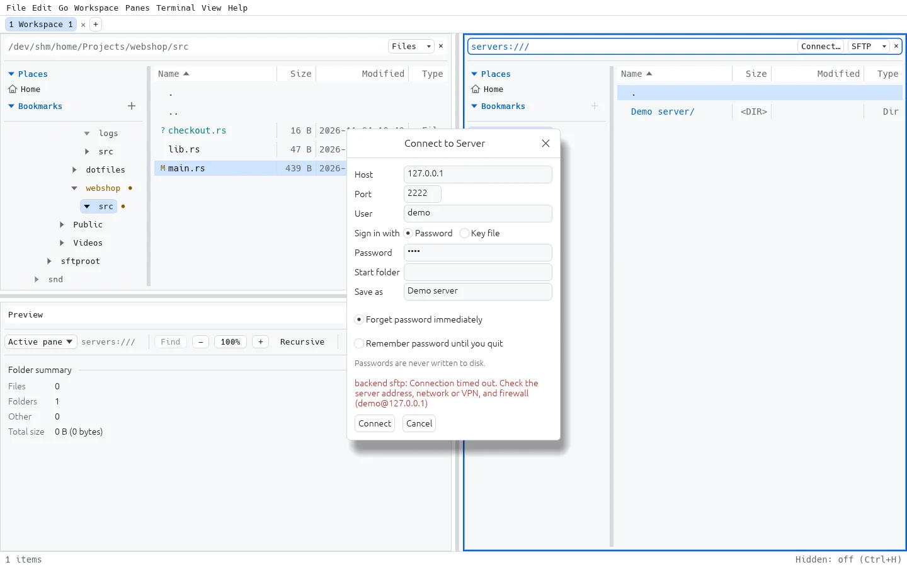
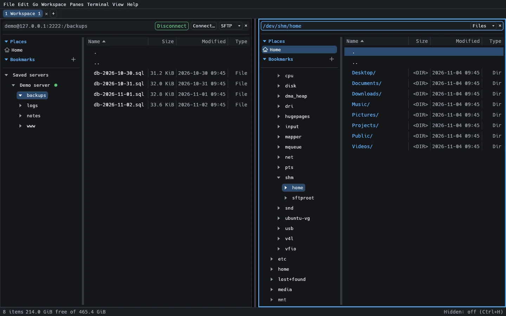
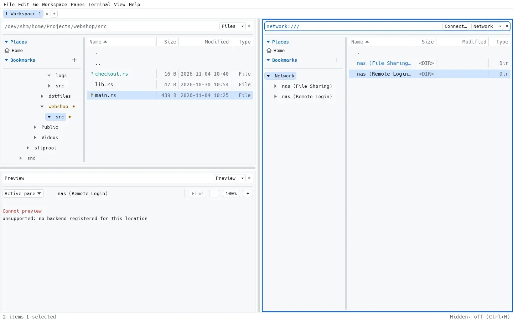
Installers are attached to each GitHub Release. Each download is a zip: unzip it first. The installers are not signed, so your OS warns on first start.
*-setup.exe..dmg and drag the app to Applications.xattr -d com.apple.quarantine ~/Downloads/FileManagerUltra_*.dmgDebian / Ubuntu:
sudo apt install ./filemanagerultra_*.debAny distro (needs FUSE 2):
chmod +x filemanagerultra_*.AppImage
./filemanagerultra_*.AppImageWith the Rust toolchain installed:
cargo build --release --locked -p fm-app
./target/release/filemanagerultraThe app checks GitHub Releases for newer versions at startup. This can be turned off in Preferences, and updating is always manual. See the full install guide.
FileManagerUltra is pre-alpha: expect rough edges and changes. Work is planned and tracked with OpenSpec. Follow along, report issues or contribute on GitHub.